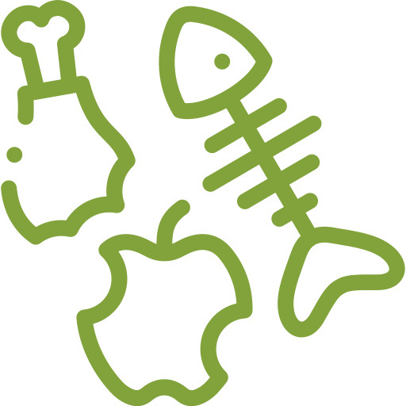
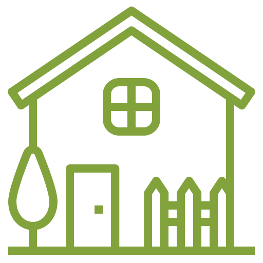
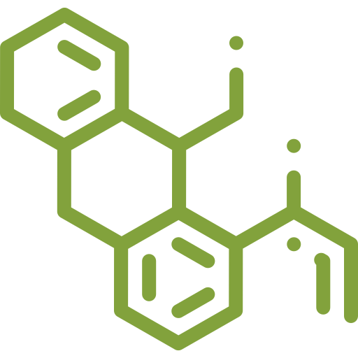
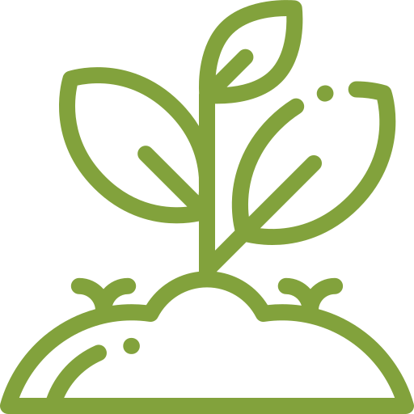
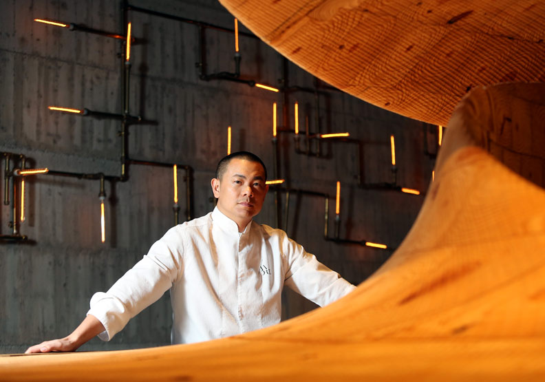

適用對象
- 
每天都為廚餘回收而煩惱嗎？
-
想堆肥但怕有異味和小蟲嗎？

想堆肥但覺得堆肥時間太久?(一般需3個月~6個月)
- 
居家空間小無法實現堆肥? (一般需堆一立方尺，約四人餐桌大小)
- 
喜歡種植植物，但怕使用化學肥嗎？
- 
想要親近大自然，調節生活壓力嗎？
在臺灣,每年約有近200萬噸的家庭廚餘被浪費
用化工桶堆疊來換算,高度相當於每日74座臺北101大樓呢!這些資源就這樣被浪費了,真的好可惜啊...
為您隆重推出RE Green居家製肥機
資源再生不浪費,讓居家廚餘變成有機肥料!
RE Green居家製肥機 + 抑臭酵素包 = 有機肥料
臺灣團隊設計研發
臺灣工廠製造MIT
通氣式製肥
可將好菌帶回土壤中
有專利、檢驗報告
及國際設計大獎的肯定
每天都為廚餘回收而煩惱嗎？
想堆肥但怕有異味和小蟲嗎？
想堆肥但覺得堆肥時間太久?(一般需3個月~6個月)
居家空間小無法實現堆肥? (一般需堆一立方尺，約四人餐桌大小)
喜歡種植植物，但怕使用化學肥嗎？
想要親近大自然，調節生活壓力嗎？
專利抑臭配方酵素
熟成期間無味道產生
專利機器防蟲設計
熟成期間無小蟲問題
專利手動攪碎設計
輕輕轉動可碎化剩食
金屬、玻璃材質及
積木式設計，方便清洗
桶身貼合手掌輕巧
便利好移動、好操作
全機材質可以回收
達到循環設計的概念

本文將以三個不同類型的「小農社群經濟」為例，分析其運作模式和實踐經驗，探究「合作市場經濟」在今天台灣農村的機會與限制。三個案例的經營......
本文將以三個不同類型的「小農社群經濟」為例，分析其運作模式和實踐經驗，探究「合作市場經濟」在今天台灣農村的機會與限制。三個案例的經營......
本文將以三個不同類型的「小農社群經濟」為例，分析其運作模式和實踐經驗，探究「合作市場經濟」在今天台灣農村的機會與限制。三個案例的經營......
本文將以三個不同類型的「小農社群經濟」為例，分析其運作模式和實踐經驗，探究「合作市場經濟」在今天台灣農村的機會與限制。三個案例的經營......
建議使用Chrome、Firefox、Safari最新版本瀏覽
全球先進SSL 256bit傳輸加密機制
Copyright © 2024 RE GREEN All right reserved.